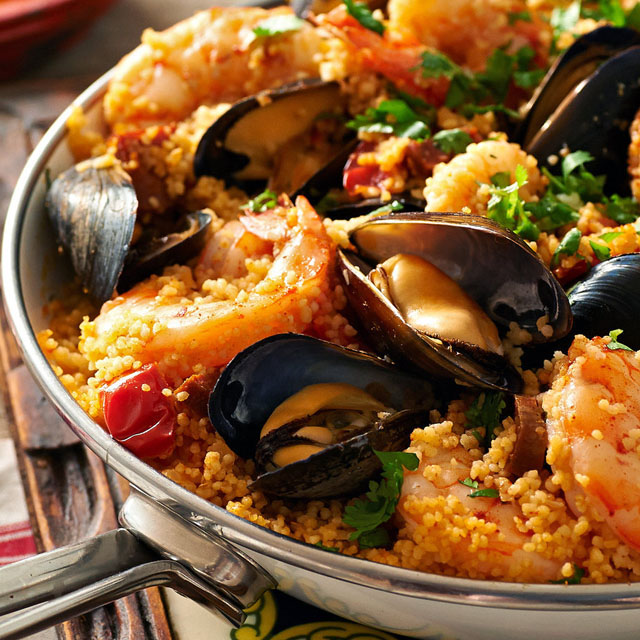

Ipsum lorem this is a article title
2h
1h
This lentil salad looks and tastes bright, thanks to a combination of tangerine juice, sherry vinegar and colorful caramelized roasted root vegetables. It works either as a main course, served with good bread and butter, or as side dish with roasted meat or fish. For the maximum visual impact, use both golden and red beets. Vegetarians can feel free to leave out the bacon. Leftovers will keep for at least five days, though try to pack it up without the radicchio, which gets soggy in the fridge.

Ingredients
- 1 Item 1
Preparation
- Step 1
- Add the tomatoes, carrots and celery, cover loosely, and simmer until the vegetables are soft, about 25 minutes longer. While soup simmers, mix the chopped rosemary, grated Parmesan, lemon zest and pepper in a small bowl.
- Season the soup to taste and ladle into bowls. Sprinkle with the Parmesan mixture.